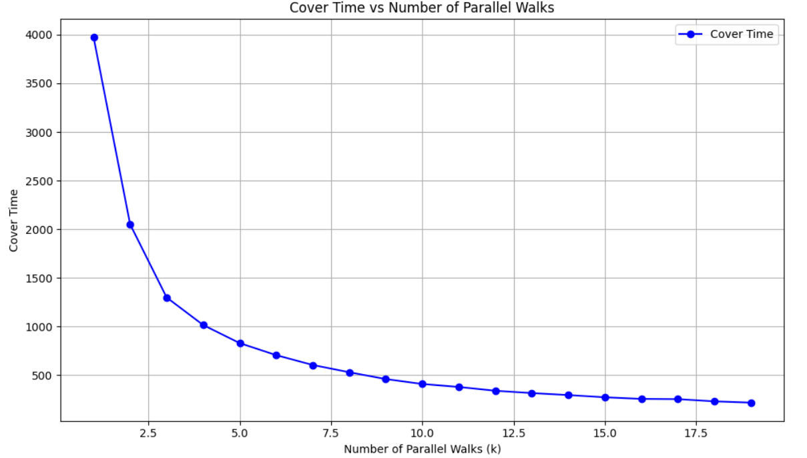

06 / PROBABILITY / SIMULATION
Single vs Parallel Random Walks
A simulation study of graph cover time, showing how parallel exploration can dramatically change the scaling behavior of a random-walk process.
Overview
A random walk is one of the simplest stochastic processes, but its behavior becomes much more interesting when the goal is to visit every node of a graph . The number of steps required to do this is known as the cover time .
For this university project, developed for the Probability for Data Science course at the University of Verona, I used simulations on complete graphs to compare a single random walk with multiple independent walks running in parallel .
The question
The main question was simple: how much faster can a graph be explored when several random walks operate at the same time?
Rather than treating the theoretical result only as a formula, I built numerical experiments that make the difference in scaling visible. This allowed me to compare empirical cover times with the expected asymptotic behavior as the graph size increases.
Experiment design
Simulate one random walk
Start from a node of a complete graph and repeatedly move to a randomly selected neighbor until every node has been visited.
Measure cover time
Record the number of steps required to cover the graph and repeat the experiment across increasing graph sizes.
Introduce parallel exploration
Run multiple independent random walks simultaneously and stop when the union of all visited nodes covers the graph.
Compare with theory
Compare the simulated results with the expected n log n behavior for one walk and log n behavior when the number of parallel walks scales with the graph size.
Effect of parallelism
The first experiment keeps the underlying exploration problem fixed while increasing the number of walks running in parallel. The reduction in cover time is immediate: the largest gains occur when moving from very few walks to a small parallel group, followed by progressively smaller improvements as more walks are added.

Empirical scaling vs. theory
The most important result is the change in asymptotic behavior. The simulations closely follow the expected theoretical trends: a single walk grows approximately like n log n , while using k = n parallel walks produces behavior consistent with log n .

Key takeaway
The project makes an abstract probabilistic result visually intuitive: parallelism does more than reduce a constant factor. Under the studied setup, it changes the way the cover time grows with the size of the graph.
- Single-walk exploration becomes increasingly expensive as the graph grows.
- Parallel exploration dramatically reduces the time required to visit the full graph.
- Simulation provides a practical way to validate and communicate asymptotic results.
- The project combines probability, graph algorithms, numerical experimentation, and scientific visualization.
What I found most interesting was seeing a theoretical scaling law emerge directly from simulation: computation turned an asymptotic probability result into something measurable and visually clear.